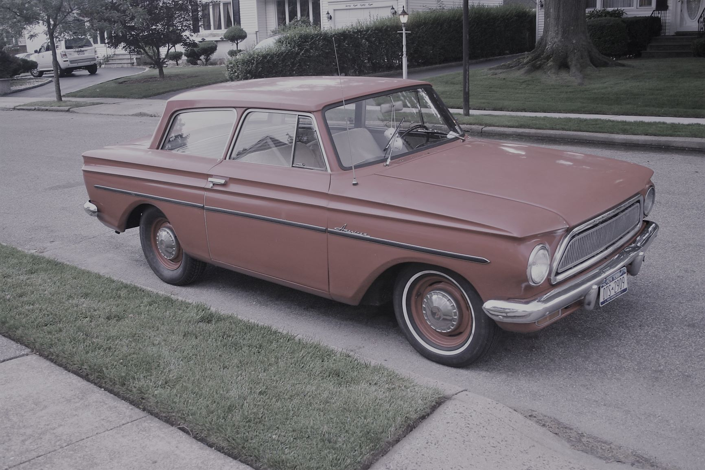

SharePoint Infrastructure SME with vast experience in Farm deployment, troubleshooting, automation, maintenance and upgrade since 2003.
I claim not to be a developer but I am generally lazy and as a result have learned to develop in order to reduce the time needed for repetititve tasks. If you have to do it more than twice, it is probably worth scripting. When it comes to design (making things look nice), I generally phone a friend or ignore the styling and emphasize function over fashion.
Why the Rambler?
I grew up in the midwest in the 70s and one of the cars my family owned was a red American Motors Corporation (AMC) Rambler - it was a POS! However, it did get us where we needed to go. I am also a rambler - I tend to ramble on about things I am passionate about or would like to share with others!
